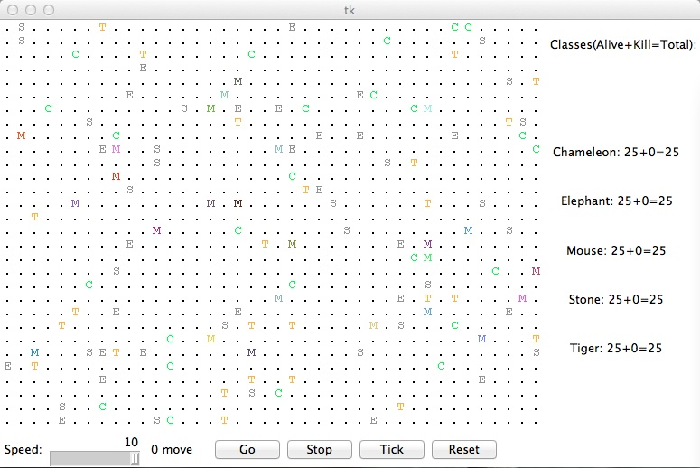

CSCI 150: Lab 11
Critter
Tournament!
Due:
10PM
on
Tuesday,
December 10th
The purpose of this lab is to:
- Practice creating classes
- Learn how to work with client code (aka how to "let go of the controls")
- Build the ultimate critter!
Getting Started
Before you begin, please create a folder called lab11 inside your cs150 folder. This is where you should put all files made for this lab.
Getting the Files
Then download the starter files into this folder and unpack it.
# somehow get the file lab11files.tar into ~/cs150/lab11 and go to this directory
tar xvf lab11files.tar
ls
You should now have the files color.py, critter_gui.py, critter_main.py, critter_model.py, and critter.py. These classes implement a graphical simulation of a 2D grid world with many animals moving around in it. Different kinds of animals move in different ways; as you write each class, you are defining those differences.
Program Summary
Before you start, let's take a look at this animal world, an example of which is shown below. You can see this world yourself by running critter_main.
python3 critter_main.py

At the beginning, you will see an empty grid with no animals. The Go button starts the simulation; initially there is nothing to simulate so the `clock' will just run with nothing happening. The stuff goes down once you have some critters on your board.
On each round of the simulation, each critter is asked which direction it wants to move. On each round, each critter can move one square to the north, south, east, west, or stay at its current location. Critters move around in a world of finite size, but the world is toroidal as in the Life lab (going off the end to the right brings you back to the left and vice versa; going off the end to the top brings you back to the bottom and vice versa).
The critter world is divided into cells that have integer coordinates. There are 60 cells across and 50 cells up and down. The upper-left cell has coordinates (0,0), increasing x values moves you right and increasing y values move you down (similar to the picture module).
This program may be confusing at first because you are not writing the main method (the client code that uses your animal objects), therefore your code will not be in control of the overall program's execution. Instead, you are defining a series of objects that become part of a larger system. For example, you might find that you want to have one of your critters make several moves all at once---you won't be able to do that. The only way a critter can move is to wait for the simulator to ask it for a move. Although this experience can be frustrating, it is a good introduction to the kind of programming we do with objects.
As the simulation runs, animals may collide by moving onto the same location. When two animals collide, they battle. The winning animal survives and the losing animal is removed from the simulation. The following table summarizes the possible action choices each animal can make and which animal will win in each case. To help you remember which beats which, notice that the starting letters and win/loss ratings of "roar, pounce, scratch" correspond to those of "rock, paper, scissors." If the animals make the same choice, the winner is chosen at random.
| Critter #2 | ||||
|---|---|---|---|---|
| ROAR | POUNCE | SCRATCH | ||
| Critter #1 | ROAR | random winner | #2 wins | #1 wins |
| POUNCE | #1 wins | random winner | #2 wins | |
| SCRATCH | #2 wins | #1 wins | random winner | |
Provided Files
Each critter you implement must have some specific state and functionality defined. In particular, each of the classes you'll write (one class per animal) will be a subclass of the following provided critter class:
# Constants for movement.
NORTH = -2
NORTHEAST = 27
NORTHWEST = 102
SOUTH = 4
SOUTHEAST = 99
SOUTHWEST = -31
EAST = 3
WEST = 19
CENTER = 11
# Constants for attack
ROAR = 28
POUNCE = -10
SCRATCH = 55
class Critter() :
# methods to be implemented
def fight(self, oppInfo):
pass
def getColor(self):
pass
def getMove(self, info):
pass
def getChar(self):
pass
# this method is called by the client prog when a fight is over
# since the client prog knows who won the fight, when it calls
# this method, it passes in true for the iWon parameter if this
# critter won the fight, and false otherwise
# oppFight is the opponent's choice of fight strategy (ROAR, POUNCE, or SCRATCH)
# the purpose of this information is to allow you to learn strategies
def fightOver(self, won, oppFight):
pass
Because your classes inherit from the superclass, they will be able to refer to the Critter defined constants. Moreover, each class must include a definition for each of the methods in the superclass (fight, getColor, getMove, getChar, and fightOver) for which it wants different (i.e. not default) behavior. For example, below is a definition for a class called Stone that is part of the simulation. Stone objects are displayed with the letter S, are gray in color, always stay on the current location(returning CENTER for their move), and always choose to ROAR in a battle.
import critter
import color
class Stone(critter.Critter):
def fight(self, oppInfo):
return critter.ROAR
def getColor(self):
return color.GRAY
def getMove(self, info):
return critter.CENTER
def getChar(self):
return 'S'
# we don't have a fightOver method here, because a
# Stone doesn't do anything with this information
# i.e. it doesn't care to change the default behavior
Add this code to a file called stone.py, then run critter_main. Now you should see some stones in your world. Of course, Stones don't move, so even when you press the Go button, nothing happens, but we'll do more interesting 'animals' in due time.
The Critter class defines nine constants for the various directions, and three additional constants for the three types of actions. You can refer to these directly in your code (critter.NORTH, critter.SOUTH, critter.ROAR, etc.) because you are inheriting from Critter (and importing critter). Your code should not depend upon the specific values assigned to these constants, although you may assume they will always be of type int. You will lose style points if you fail to use the named constants when appropriate.
Critters to Implement
mouse.py: 6 points
tiger.py: 8 points
elephant.py: 8 points
chameleon.py: 8 points
your own critter: 8 points
The following are the five critter classes you will implement. Each class must have only one constructor and that constructor must accept exactly the parameter(s) described in the table. For random moves, each possible choice must be equally likely.
Take some time to properly design your classes. Use static (non-instance) variables and the given constants where appropriate.
Mouse
| constructor | def __init__(self, color) |
| fighting behaviour | always SCRATCH |
| color | the color passed to the constructor |
| movement behaviour | alternates between EAST and SOUTH in a zigzag pattern (first EAST, then SOUTH, then EAST, then SOUTH,...) |
| character | 'M' |
The Mouse constructor accepts a parameter representing the color in which the Mouse should be drawn. This color should be returned each time the getColor method is called on the Mouse (so, maybe you should store it somewhere). For example, a Mouse constructed with a parameter value of color.RED will return color.RED from its getColor method and will therefore appear red on the screen. Of course, it is the main program that will construct these mice, so you will have no control over what color each Mouse is displayed as.
Remember, the getMove method is called by the main program each time the critter needs to move; you can use this information to keep track of whether it is time to move East or to move South.
Tiger
| constructor | def __init__(self) |
| fighting behaviour | always ROAR |
| color | alternates between color.ORANGE and color.BLACK (first color.ORANGE, then color.BLACK, then ...) |
| movement behaviour | moves 3 turns in a row in one random direction (NORTH, SOUTH, EAST, or WEST), then chooses a new random direction and repeats |
| character | 'T' |
Elephant
| constructor | def __init__(self, steps) |
| fighting behaviour | if opponent displays as a Tiger (with the character 'T'), then ROAR; otherwise POUNCE |
| color | color.GRAY |
| movement behaviour | first go SOUTH steps times, then go WEST steps times, then go NORTH steps times, then go EAST steps times (a clockwise square pattern), then repeats |
| character | 'E' |
The Elephant constructor accepts a parameter representing the distance the Elephant will walk in each direction before changing direction. For example, an Elephant constructed with a parameter value of 8 will walk 8 steps south, 8 steps west, 8 steps north, 8 steps east, and repeat. You can assume that the value passed for steps is at least 1.
For the fight method, you need to determine your opponent's display character. Every time a critter's fight method is called, it is passed a parameter oppInfo of type CritterInfo that provides useful information about the current opponent, including its display character. In particular, a critter's CritterInfo contains the following fields:
x -- the current critter's x coordinate
y -- the current critter's y coordinate
width -- the width of the simulation world
height -- the height of the simulation world
char -- the current critter's display character
color -- the current critter's display color
getNeighbor(direction) -- a method that, when called with a parameter
representing one of the direction constants, returns the name of the class
(NOT the display character) of the critter in that location
(i.e. the location that is one space in the given direction of the current critter.)
Thus, in the fight method, the code oppInfo.char represents the opponent critter's display character, and oppInfo.color its color. Slightly less useful now, the code oppInfo.getNeighbor(critter.NORTH) would return the string 'Stone' if there is a stone to the north of your opponent, and the string '.' if there is no neighbor to the north.
Note that a every time a critter's getMove method is called, it is passed a parameter info also of type CritterInfo; this time, the information being passed in is about the current (self) critter, not of an opponent. Once again, some of the information (for example, knowing what neighbors you have in your immediate vicinity) may help you make better movement choices (i.e. avoidance or attack.)
The Chameleon
| constructor | def __init__(self) |
| fighting behaviour | the strategy that beats the most used strategy against the chameleons so far (not just this one chameleon) |
| color | the color used by this particular chameleon's last opponent |
| movement behaviour | if the chameleons have lost the majority of their fights so far, then use avoidance. Otherwise, move towards opponents. |
| character | 'C' |
The Chameleon will try to emulate the appearance of its most recent (losing) opponent by displaying the opponent's color. (You can get this information from the fight method's oppInfo parameter.) As its fighting behavior, a Chameleon will use the strategy that beats (and is thus different from) the most pas opponents of chameleons; that is, the chameleon 'species' needs to keep statistics on how often each strategy is used against a chameleon (think: static (i.e. non-instance) variables) and play the counter-strategy to the most-used one. You can obtain information about the outcome of each battle from the fightOver method, which is called at the end of each and every battle, and tells each critter whether it won or lost the battle (won is true if the former, false if the latter) and what its opponent's fighting strategy was (oppFight is one of ROAR, POUNCE, or SCRATCH). Finally, a chameleon's movement strategy is based on the chameleon species' success rate: if it is not faring well (if chameleon's have lost at least half their battles) then it will try to avoid other critters, that is, it moves away from adjacent critters if possible, or stays in the same spot if surrounded. If chameleons are winning over half their battles then they become agressive and move towards other critters. You can find out which critters (if any) are to your north, south, east, west, north-east, north-west, south-east, and south-west through the info parameter (of type CritterInfo, described above) that is passed to the getMove method. For example, info.getNeighbor( critter.NORTH ) will return the class name (as a string) of the critter to the North, and '.' if there is none.
The <YourName> Creature
| constructor | def __init__(self) |
| fighting behaviour | you decide |
| color | you decide |
| movement behaviour | you decide |
| character | you decide |
You will decide the behaviour of the <YourName> class. (Your constructor must accept no parameters as shown above.) Remember, the format for naming your class should be your first name followed by your last initial. My critter would be called CynthiaT in the file cynthiat.py.
Your Own Critter Class
Part of your grade will be based upon writing creative and non-trivial behaviour in your critter class. The following are some guidelines and hints about how to write an interesting critter.
Your critter's fighting behavior may want to utilize the parameter sent to the fight method, oppInfo, which tells you how your opponent displays themselves (oppInfo.char is their display character, oppInfo.color is their display color, and oppInfo.getNeighbor(critter.CENTER) is their class name; for a Mouse these are 'M', Color(r=133, g=132, b=118), and "Mouse", respectively.)
You can make your critter return any character you like from its getChar method and any color you like from the getColor method. In fact, critters are asked what display color and character to use on each round of the simulation, so you can have a critter that displays itself differently over time. Keep in mind that the getChar character is also passed to other animals when they battle your critter; you may wish to strategize to try to fool other animals.
Part 3 - Wrap Up
As with every lab, your last job prior to submission is to complete a brief write-up by filling out a Google Form.
Handin
You now just need to electronically handin all your files. As a reminder
cd # changes to your home directory
cd cs150 # goes to your cs150 folder
handin # starts the handin program
# class is 150
# assignment is 11
# file/directory is lab11
lshand # should show that you've handed in something
You can also specify the options to handin from the command line
cd ~/cs150 # goes to your cs150 folder
handin -c 150 -a 11 lab11
File Checklist
You should have submitted the following files:
mouse.py
tiger.py
elephant.py
chameleon.py
your_first_name_followed_by_initial_of_last_name.py